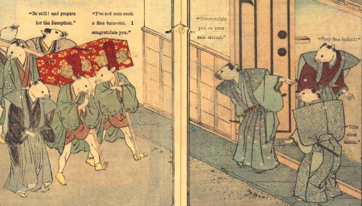

花嫁行列の先頭が、婿の家の門に到着したところ。裃姿の3体の鼠が、中に入るよう指示を出している。青い羽織の鼠たちが、花嫁の調度や駕籠を運んでおり、裃姿の鼠が付き添っている。
著作者：David Thompson／出典：親書誌：U426_nichibunken_0112：Nedzumi no Yome-Iri／日付：2006／資源識別子：U426_nichibunken_0112_0008_0000
Copyright (c)2010- International Research Center for Japanese Studies, Kyoto, Japan. All rights reserved.